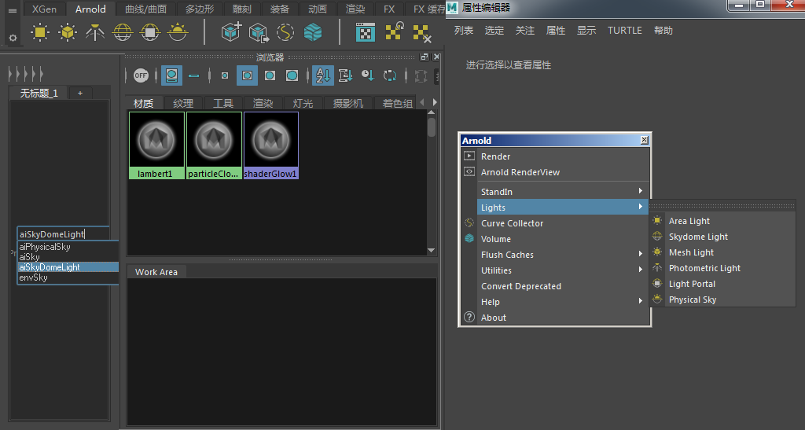
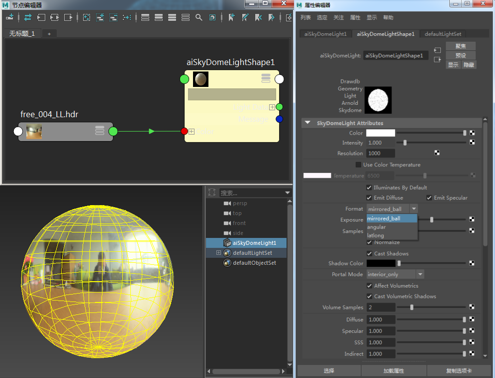
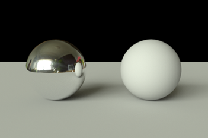
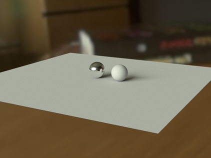
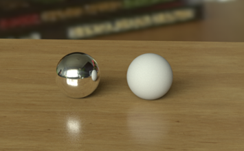
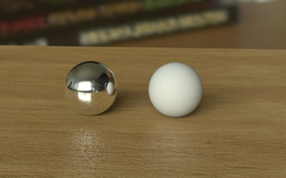

创建 Ai SkyDomeLight

HDR 贴图连接到 Ai SkyDomeLight。“格式”(Format)设置为“镜像球”
在 skydome_light 的属性编辑器中，向下滚动到“分辨率”(Resolution)。键入与 HDR 贴图的分辨率匹配的值。SkyDomeLight 使用重要性采样向重要的方向发送更多光线，而重要性表的分辨率需要足够高才能捕捉 HDR 贴图中的小细节，但不得高于 HDR 贴图本身的分辨率。
要测试 skydome_light 的效果，我们需要创建一个简单的场景。创建一个多边形平面，然后将其向外扩展为接近栅格大小。创建两个多边形球体，并将其放置在平面上。
在 Hypershade 窗口中，创建两个 standard_surface 着色器。将一个 standard_surface 指定给一个球体，将另一个着色器指定给另一个球体。
现在我们将第二个 standard_surface 着色器更改为类似镀铬的材质。选择该节点并打开属性编辑器。首先，将它重命名为 Chrome。将 base_weight 增大到 1。将 metalness 增大到 1，将 specular_roughness 减小到 0，从而获得镜子般清晰的反射。

将一个球体设置为镀铬材质，将另一个设置为蒙版材质

天穹灯光在摄影机背景中可见
创建另一个标准曲面着色器，并将其指定给平面。将其重命名为“Wood Table”。在属性编辑器中，将木材颜色文件纹理连接到 base_color 窗口。
在属性编辑器中，将镜面反射贴图添加到镜面反射的“颜色”(Color)窗口。为了对木材材质的镜面反射设置进行微调，现在是开始 IPR 渲染的好时机。将镜面反射的“权重”(Weight)值更改为 0.3 左右。您应该注意到，球体下方木材材质上的镜面反射高光很明亮。尝试调整“粗糙度”(Roughness)值。增大“粗糙度”(Roughness)值可以柔化镜面反射高光，而减小“粗糙度”(Roughness)值可以使高光更清晰。

在多边形平面上木板纹理连接到标准曲面着色器

将凹凸贴图纹理添加到木材着色器